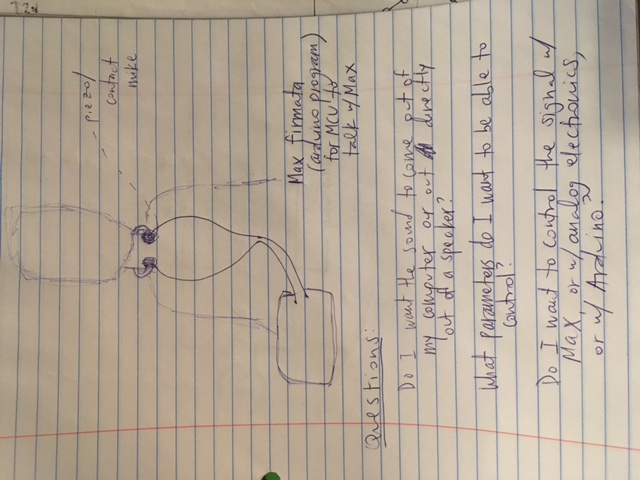
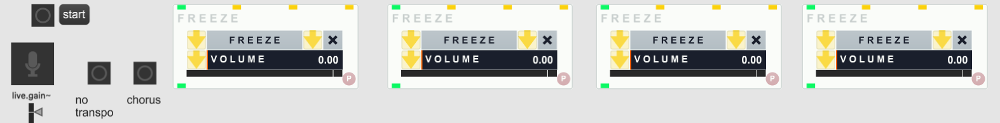

<br>
#### Some thoughts for what would've been my final project
Here is a sketch I made for what would've been my final project!
My final idea was to make a contact microphone and capacitive touch controller that would interface with my existing Max patch for a voice instrument.

Here is the Max patch that I want to interface with. I've previously used it with a regular voice mic. It has an input for sound and then several Freeze modules, which sample a moment of a sound and extend it indefinitely. Each is tuned to a different frequency. The button that says "no transpo" disables the Freeze modules off, and the one that says "chorus" enables them. The patch lets me make a layered drone sound that I use as a harmonic bedding for additional sounds.

I would've used my contact mic as the input for the patch. My capacitive touch controller would've had the no transpo and chorus buttons, on/off buttons for each Freeze module, and sliders to control the volume of each frozen voice.
I would've probably used a Max firmata to get my controller to communicate with the Max patch via an Arduino, a PCB and a 3D printed casing for the controller, and a store-bought audio interface to send audio from the contact mic into Max. I would've attached the contact mic to the necklace I 3D printed a few weeks ago.
Hopefully I'll be able to make this in the future!